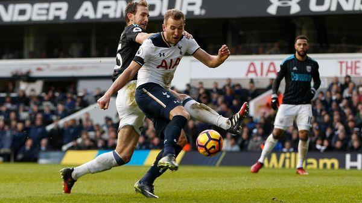

Новости футбола
После неуступчивой игры подопечных Пьюлиса в гостях с Арсеналом и Челси нечто подобное от них ожидали и на Уайт Харт Лейн, но Вест Бромвич оказался неспособным противостоять постоянному давлению Шпор и буквально развалился на глазах. Конечно, во многом результаты Дроздов зависят от стабильности их состава (особенно в обороне), а как раз перед поединком с Тоттенхэмом уехал на КАН Ньом и был травмирован Эванс.
И если подавляющее преимущество команды Почеттино по владению мячом (73%) никого особенно не удивило, то отсутствие у гостей ударов в створ ворот, да и в целом каких-либо опасных моментов озадачило. Даже после стандартов Дрозды ничего не могли придумать и должны быть довольны, что не пропустили еще больше. Шпоры же предстали во всей красе, а особенно это касается Кейна, который нанес больше половины ударов (11) в направлении ворот Фостера от общего количества.
